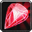
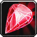

Le Voleur est une classe purement corps à corps. Il peut se camoufler pour être invisible aux yeux de ses ennemis et maitrise l'art de la diversion. La particularité de la spécialité Finesse réside dans sa mobilité et l'augmentation de son camouflage. Il reste fragile contre d'autre CAC, mais son esquive lui permet de s'en sortir, Sinon contre les sorts il est assez fragile. Il est efficace en monocible, mais pas en multicible.
C'est une classe complexe nécessitant de l’anticipation dans la gestion de ses controles et son camouflage face à l'ennemi.
En PvP c'est une spécialisation facile à jouer, car cette spé a de quoi se rapprocher de sa cible en un éclair et on le tient plus difficilement à distance. Cette classe à beaucoup de survie grâce à ses controles (les meilleurs du jeu) et est fortement adapté à l'arène.
Elle est très utile en bg, très viable pour de la 2c2 en arène, et adaptée pour de la 3c3 ou 5c5.
 LES TECHNIQUES LES PLUS UTILISÉES
LES TECHNIQUES LES PLUS UTILISÉES
De dégâts
 Embuscade (Très efficace contre un tissu, il faut une dague en main droite, utilisable en camouflage)
Embuscade (Très efficace contre un tissu, il faut une dague en main droite, utilisable en camouflage) Hémorragie (Suivant votre spé)
Hémorragie (Suivant votre spé) Eviscération (dégâts en fonction des points de combos)
Eviscération (dégâts en fonction des points de combos) Attaque pernicieuse (Donne des points de combos)
Attaque pernicieuse (Donne des points de combos) Lancer (utilise l'arme de jet)
Lancer (utilise l'arme de jet)De soutiens
 Coup de pied (Pour décast un caster ou healer de près)
Coup de pied (Pour décast un caster ou healer de près) Evasion (Augmente l'esquive, très efficace si vous prenez chère contre un CAC)
Evasion (Augmente l'esquive, très efficace si vous prenez chère contre un CAC) Sprint (Augmente la vitesse de course)
Sprint (Augmente la vitesse de course) Suriner (Stupéfie l'adversaire, utile pour remonter son energie ou repasser en camouflage, si vous avez le Suriner amélioré)
Suriner (Stupéfie l'adversaire, utile pour remonter son energie ou repasser en camouflage, si vous avez le Suriner amélioré) Cécité (Désoriente la cible)
Cécité (Désoriente la cible) Préméditation (Ajoute deux points de combo à la cible)
Préméditation (Ajoute deux points de combo à la cible) Pas de l'ombre (Suivant votre spé, vous vous téléportez instantanément vers la cible, utile pour décast un heal quand on est loin et quand lancer n'est pas up, utile aussi pour s'échapper)
Pas de l'ombre (Suivant votre spé, vous vous téléportez instantanément vers la cible, utile pour décast un heal quand on est loin et quand lancer n'est pas up, utile aussi pour s'échapper) Préparation (Met fin au temps de recharge de Evasion, Sprint, Disparition, Sang froid, Pas de l'ombre et Préméditation)
Préparation (Met fin au temps de recharge de Evasion, Sprint, Disparition, Sang froid, Pas de l'ombre et Préméditation) Les caps et stats
Les caps et statsRappel : Un cap par définition c'est la valeur à partir de laquelle vous n'avez plus aucun intérêt à monter une statistique.
Expliquées par ordre de priorité :
La puissance d'attaque
C'est une stat importante qui n'a pas de cap. Plus vous en avez, mieux c'est. Mais ça ne veut pas dire qu'il faut up QUE cette stat. montez les autres aussi.
Cette stat s'augmente avec de préfèrence de l'Agilité (car elle augmente aussi le score d'esquive, de coup critique et à faible taux votre armure).
Le toucher
Tout d'abord il faut comprendre que le toucher vous permet d'éviter "les ratés" quand vous frapper vos ennemi que ce soit à distance ou au corps à corps.
En PvP contre une cible de même niveau vous devrez "théoriquement" avoir 5% de toucher, le cap est néanmoins à ~95 en score de toucher (6%) pour éviter les ratés avec vos techniques. Le toucher est plus important que le score de coup critique jusqu'à ce stade.
Essayez de le montez à 4% environ au début, ensuite arrivé au s3 vous aurez du toucher sur le stuff (vous gagnerais 3% de toucher environ avec le stuff). si vous estimez toute fois que vous faites beaucoup de "raté", essayez d'augmenter votre toucher légérement.
Le critique
C'est une stat importante à monter, car c'est cette stat qui vous permet, grace à vos critiques, de faire de gros dégâts, c'est toujours un gros plus.
Le cap pour cette stat est à 35%. 32% peuvent suffire. Si vous montez votre agilité, c'est cette stat qui upera vos critiques.
La résilience
Cette stat est importante en PvP, Elle diminue les dégâts des sources de dégâts périodiques (DOT) et les chances de recevoir un coup critique. Diminue aussi les effets des drains de mana et les dégâts des coups critiques.
Pour faire simple le cap de la résilience est de 492.5, au dessus de 500, la résilience ne diminue plus les chances de recevoir un coup critique (diminué de 25% au max). Mais il n'y a pas de cap résilience pour la diminution des dégâts des DOT.
Plus vous la montez, plus vous aurez de survie.
L'endurance
C'est la Stat de la survivabilité, assez importante en PvP. à monter en second plan à la fois avec le stuff mais aussi avec quelques enchant / gemmes, si vous en avez la possibilité.
Pénétration d'armure
Une stat utile, qui vous permettra d'ignorer l'armure de votre adversaire. Utile surtout contre les classes à grosse armure, comme le guerrier ou paladin. En PvP c'est la stat que vous monter avec votre stuff. Donc inutile d'en dire plus.
L'expertise
Cette stat ci, comparé au toucher, diminue les chances qu'on esquive ou pare vos attaques de mêlée et à distance. C'est à dire que plus vous avec du score d'expertise, moins l'ennemi va esquiver et / ou parer vos attaques.
C'est surtout une stat PvE, mais contre un rogue qui à beaucoup d'esquive, ça peut être utile. Il y a un bijou à la Terrasse des magistère en héroïque qui à du score d'expertise, inutile donc de s'étendre sur le sujet.
Il n'y a pas de "cap" pour cette stat qui est vraiment optionnelle.
Le score de hate
C'est ce qui vous accélère la vitesse d'attaque.
Cette stat est inutile en PvP, Sachant que vous avez déjà un enchantement d'arme qui vous accélère la vitesse d'attaque (Mangouste).
C'est une stat utile qu'en PvE.
 L'arbre de talent
L'arbre de talentAvant de commencer vous pouvez voir les talents voleur sur ce site
Les points importants dans la spé Finesse sont :
 Malice
Malice Frappes implacables
Frappes implacables Mortalité
Mortalité Maître des illusions
Maître des illusions Sens amplifiés Préparation
Sens amplifiés Préparation Coups fourrés Préméditation Pas de l'ombre
Coups fourrés Préméditation Pas de l'ombrespé Pas de l'ombre
 Poisons abominable Hémorragie
Poisons abominable HémorragieSpé Embuscade
 Opportunité Embuscade améliorée
Opportunité Embuscade amélioréeVous pouvez cliquer sur les images pour les agrandir.
Pas de l'ombre (Shadowstep) classique

Variante avec exposer l'armure amélioré
2.png)
Pas de l'ombre (Shadowstep) spé Embuscade (Ambush)

variante
Spé Embuscade (Ambush) - Attaque sournoise

Variante
 Les gemmes
Les gemmesPour ce qui est des enchants et gemmes il vous faut de l'agilité ou de la puissance d'attaque et du critique et si possible de l'endurance, voir de la résilience.
La première méta est fait pour ceux qui veulent maxer puissance d'attaque, la deuxième est pour ceux qui veulent maxer l'Agilité.
Avec la puissance d'attaque forcement vous gagnez en puissance d'attaque mais par rapport à l'agilité, vous perdez en esquive et un peu en critique. Vous pouvez toutefois mixer les deux compos, mettre de l'agilité pour up vos critiques et de la puissance d'attaque sur les emplacements rouges.
 Méta-gemme Diamant brûleciel de rapidité : +24 à la puissance d'attaque et légère augmentation de la vitesse de course
Méta-gemme Diamant brûleciel de rapidité : +24 à la puissance d'attaque et légère augmentation de la vitesse de course
Il vous faut 2 gemmes jaunes et 1 gemme rouge pour pouvoir l'activer
 +8 Agilité, ou  +10 Agilité
+8 Agilité, ou  +10 Agilité +4 Toucher +4 Agilité, ou
+4 Toucher +4 Agilité, ou  +5 Toucher +5 Agilité
+5 Toucher +5 Agilité +8 toucher, ou
+8 toucher, ou  +10 toucher, si vous manquez de toucher
+10 toucher, si vous manquez de toucherou
+16 Puissance d'Attaque, ou +20 Puissance d'Attaque +4 critique +8 Puissance d'attaque, ou +5 critique +10 Puissance d'attaque +8 critique, ou +10 critique +8 toucher, ou +10 toucher, si vous manquez de toucher Méta-gemme Diamant tonneterre implacable : +12 Agilité et +3% aux dégâts des critiques
Méta-gemme Diamant tonneterre implacable : +12 Agilité et +3% aux dégâts des critiques
Il vous faut 2 gemmes Bleues, 2 gemmes rouges et 2 gemmes jaune pour l'activer
+8 Agilité, ou +10 Agilité +4 Toucher +4 Agilité, ou +5 Toucher +5 Agilité +4 Agilité +6 Endurance, ou
+4 Agilité +6 Endurance, ou  +5 Agilité +7 Endurance x2 au choix
+5 Agilité +7 Endurance x2 au choix +4 Résilience +6 Endurance, ou
+4 Résilience +6 Endurance, ou  +5 Résilience +7 Endurance x2 au choix +8 toucher, ou +10 toucher, si vous manquez de toucher
+5 Résilience +7 Endurance x2 au choix +8 toucher, ou +10 toucher, si vous manquez de toucherou
+16 Puissance d'Attaque, ou +20 Puissance d'Attaque +4 critique +8 Puissance d'Attaque, ou +5 critique +10 Puissance d'Attaque +8 Puissance d'Attaque +6 Endurance, ou +10 Puissance d'Attaque +7 Endurance x2 au choix +4 critique +6 Endurance, ou +5 critique +7 Endurance x2 au choix +8 toucher, ou +10 toucher, si vous manquez de toucher Méta-gemme Diamant brûleciel énigmatique : +12 au score de coup critique & 5% de résistance à Ralentir et Immobiliser
Il vous faut plus de gemmes rouges que de jaunes pour l'activer
+8 Agilité, ou +10 Agilité +4 Toucher +4 Agilité, ou +5 Toucher +5 Agilité +8 toucher, ou +10 toucher, si vous manquez de toucherou
+16 Puissance d'Attaque, ou +20 Puissance d'Attaque +4 critique +8 Puissance d'attaque, ou +5 critique +10 Puissance d'attaque +8 critique, ou +10 critique +8 toucher, ou +10 toucher, si vous manquez de toucher Les enchantements
Les enchantementsPar ordre de priorité
Par ordre de priorité
Casque
Glyphe de férocité (+34 à la puissance d'attaque, +16 au toucher) Réputation Expédition cénarienne Révéré.
Arcanum du paria (+17 Force, +16 Intelligence) Réputation Ville basse Révéré.
Arcanum du gladiateur (+18 Endurance et +20 au score de résilience) Réputation Opération Soleil brisé Amical.
Epaules
Calligraphie superieures de supérieure de vengeance (+30 à la puissance d'attaque, +10 score de critique) Exalté Aldor
Calligraphie supérieure de la lame (+20 à la puissance d'attaque, +15 score de critique) Exalté Clairvoyant
Calligraphie de vengeance (+26 à la puissance d'attaque) Honoré Aldor
Calligraphie de la lame (+13 score de critique) Honoré Clairvoyant
Torse
Carac. exceptionnelles (+6 à toutes les caractéristiques)
Résilience majeur (+15 résilience)
Pts vie exceptionnels (+150 point de vie)
Brassards
Assaut (+24 Puissance d'attaque)
Robustesse (+12 Endurance)
ou à la limite Caractéristiques (+4 à toutes les caractéristiques)
Cape
Agilité supérieure (+12 Agilité)
ou à la limite Résistance majeure (+7 à toutes les résistances)
Armure majeure (+120 armure)
Jambes
Craft par un Travailleur du cuir
Armure de jambe de cobra (+50 Puissance d'attaque, +12 critique)
Armure de jambe de faille du Néant (+40 Endurance, +12 Agilité)
Armure de jambe en peau de cobra (+40 Puissance d'attaque, +10 critique)
Armure de jambe en cuir-fourchu (+30 Endurance, +10 Agilité)
Gants
Agilité excellente (+15 Agilité)
Assaut (+26 Puissance d'attaque)
Pieds
Dextérité (+12 Agilité)
Rapidité du félin (+6 Agilité et augmentation de la vitesse de course)
Vitesse du sanglier (+9 Endurance et augmentation de la vitesse de course)
Tout dépend de votre méta gemme puisque l'augmentation de la vitesse ne se cumule pas.
Robustesse (+12 Endurance)
Pied sûr (+10 toucher et Augmente de 5% la résistance à ralentir et à immobiliser)
Bagues
Si vous avez enchantement
Caractéristiques (+4 à toutes les caractéristiques)
Arme
Mangouste (Proc qui augmente l'Agilité de 120 et la vitesse d'attaque)
Exécutrice (Bourreau) (Proc qui ignore 840 points d'armure de votre adversaire)
Certains préfèrent double Mangouste, d'autre préfère Bourreau en main droite et Mangouste en main gauche. A vous de voir.
Légende :
[Button:1] = bouton gauche de la souris
[button:2] = bouton droit de la souris
[nomod] = bouton par défaut du clavier
[mod:alt] = alt + le bouton par défaut
[mod:shift] = shift + le bouton par défaut
[mod:ctrl] = controle + le bouton par défaut
Ces macros sont adapté pour quelqu'un qui joue à la souris, mais vous pouvez les adapter à votre sauce par exemple :
Avec Hémorragie, version à la souris
Bouton gauche Attaque automatique, bouton droit Hémorragie.
Version bind clavier :
[Touche par défaut]Hémorragie, Alt+[touche par défaut] Attaque automatique.
Pour un raccourci clavier il faut indiquer [nomod] pour la touche par défaut, et vous pouvez remplacer alt pour autre chose sur la deuxième ligne.
Notez aussi que si vous ne mettez aucun rang de sort, le rang maximum sera utilisé.
Cécité + bandage
Lance Cécité dans toute les situations, Si vous voulez lancer un Cécité et enchainer rapidement sur un bandage il vous faut utiliser le bouton de droite deux fois, vous pouvez utilisez le bouton de droite pour simplement mettre un bandage à un allier. Si vous ciblez un allier et que vous appuyez sur alt, le bandage se lancera sur vous.
Vous pouvez faire la même macro avec le sap (Assommer).
Assommer + bandage
Lance Assommer dans toute les situations, Si vous voulez lancer un Assommer et enchainer rapidement sur un bandage il vous faut utiliser le bouton de droite, vous pouvez utilisez le bouton de droite pour simplement mettre un bandage à un allier. Si vous ciblez un allier et que vous appuyez sur alt, le bandage se lancera sur vous.
Coup de pied et Focus
Bouton de gauche lance Coup de pied sur votre cible actuelle. Bouton de droite lance Coup de pied sur votre focus en le ciblant puis en revenant sur votre ancienne cible.
Cécité et Focus
Bouton de gauche lance Cécité sur votre cible actuelle. Bouton de droite lance Cécité sur votre focus en le ciblant puis en revenant sur votre ancienne cible.
Poison main droite
Permet d'appliquer un poison sur une arme en 1 clic, ici c'est l'arme en main droite. (Le Poison douloureux V, le Poison de distraction mentale III et le Poison instantané VII sont les plus utilisés sur cette main)
Poison main gauche
Permet d'appliquer un poison sur une arme en 1 clic, ici c'est l'arme en main gauche (Le Poison affaiblissant II est le plus utilisé sur cette main).
Decast
Bouton de gauche lance Coup de pied pour décast quand vous êtes au corps à corps, bouton de droite lance Lancer mortel pour décast à distance ou ralentir.
Sang froid
Utilise Préméditation juste avant de lancer coup bas, ce qui vous permet d'avoir 4 points de combos sur la cible direct. Vous pouvez faire la même chose avec Garrot et Embuscade
Sang froid
Utilise Sang froid, votre bijoux trinket si vous en avez un, et lance Embuscade. Utile pour faire un Embuscade critique. Le deuxième bijoux est en position 14.
Pas de l'ombre
Utilise Pas de l'ombre sur n'importe quel bouton, si vous appuyez en plus sur shift, lance Pas de l'ombre sur le focus (que vous le ciblez ou pas).
Ensuite sur le bouton 1 (Bouton de gauche) lance Coup bas sur votre cible, si vous appuyez sur alt et bouton 1, ça lance Garrot sur votre cible.
Si vous appuyez sur le bouton 2 (Bouton de droite) lance Embuscade sur votre cible, si vous appuyez sur alt et bouton 2, ça lance Lancer mortel sur votre cible.
Si vous appuyez sur le boutton 3 (Clic molette de la souris) lance Coup de pied sur votre cible. Et si vous appuyez sur shift et le bouton 3, lance Coup de pied sur le focus (que vous le ciblez ou pas)
De plus si vous appuyez sur controle, cela vous empechera de lancer un Pas de l'ombre et vous lancerez simplement un Coup bas, et si vous voulez lancer un simple Garrot il vous faut appuyez sur alt. Un Embuscade ou un coup de pied sans Pas de l'ombre, vous pouvez appuyez sur controle et le bouton 2 / bouton 3.
Macro anti-rogue/feral
Vous pouvez la spammer dès que vous voyez un fufu en camouflage pas loin de vous, la macro va vous permettre de le cibler et de lui appliquer un Traquenard. Vous pouvez mettre un autre sort que Traquenard.
variante
Cette macro est utile contre les autres Voleurs. Elle vous permet d'auto-ciblé un ennemi proche et de lui infliger un Sap (assommer).


 Haut de page
Haut de page{kind=link}
{kind=link}